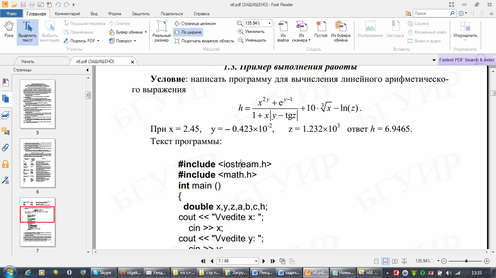

Лекция № 2 (2ч)
Тема: Язык программирования высокого уровня С++ и среда
разработки Visual Studio. Типы данных. Ключевые слова. Операции и операторы языка С++.
Цель лекции: Изучить основы создания программ в С++.
Рассматриваемые вопросы:
1.Переменные и типы данных. Ключевые слова.
2.Операции и операторы языка С++.
Глоссарий
Данные - любые данные, т.е. константы, переменные, значения функций или выражения, в Visual C++ характеризуются своими типами.
Тип данных – это описание диапазона значений, которые может принимать переменная, указанного типа.
Модификатор – специальные составляющие основных типов данных, предназначенные для расширения возможности использования типов данных при программировании на Visual C++.
1.Переменные и типы данных. Ключевые слова.
Для решения задачи в любой программе выполняется обработка каких-либо данных. Данные могут быть самых различных типов: целые и вещественные числа, символы, строки, массивы. Данные в языке С++ описываются в начале функции. Каждое имя и каждое выражение имеет тип, определяющий операции, которые могут над ними производиться. Например, описание int str; определяет, что str имеет тип int, то есть, str является целой переменной.
Описание - это оператор, который вводит имя в программе. Описание задает тип этого имени. Тип определяет правильное использование имени или выражения.
Переменная – поименованный участок памяти, в котором хранится значение.
К основному типу можно применять прилагательное const. Значение типа const не может изменяться после инициализации.
Инициализация – присвоение переменной первоначального значения. (Например, const float pi=3.14).
Большинство программ на Visual С++ будут использовать следующие типы данных:
|
Тип |
Описание |
Например |
|
char |
для обозначения символьных переменных |
char str; |
|
int |
для обозначения целых чисел. |
int a; |
|
float |
для обозначения вещественных чисел одинарной точностью. |
float a; |
|
double |
для обозначения вещественных чисел двойной точности. |
double a; |
|
bool |
логический тип, который имеет 2 значения: true, false. |
bool a; |
Основные типы данных могут быть расширены с помощью следующих модификаторов:
unsigned - употребляется для обозначения переменных только с положительными числами.
short - употребляется для обозначения коротких целых чисел;
long - употребляется для обозначения длинных целых чисел. Например, short int a;
Ключевые слова — это предварительно определенные зарезервированные идентификаторы, имеющие специальные значения. Их использование в программе в качестве идентификаторов не допускается. Для Microsoft C++ зарезервированы следующие ключевые слова: array; break; char; case; continue; const; do; else; for; false и т.д.
2.Операции и операторы языка С++
К типам данных применяемых в С++ используются разного типа операции. Те данные, которые учувствуют в той или иной операции называют операндами. Операции бывают разных типов:
Арифметические операции
|
+ |
cложение |
x =5, y=3 z=x+y; z=8 |
|
- |
вычитание |
z=x-y; z=2 |
|
* |
умножение |
z=x*y; z=15 |
|
/ |
деление |
z=x/y; z=1 |
|
% |
получение остатка |
z=x%y; z=2 |
Операции присваивания
|
= |
присваивание |
x=10 |
|
+= |
присваивание со сложением |
x+=10 (х=х+10) |
|
- = |
присваивание с вычитанием |
x-=10 |
|
*= |
присваивание с умножением |
x*=5 |
|
/= |
присваивание с делением |
x/=5 |
|
%= |
присваивание с получением остатка |
x%=3 |
Унарные и бинарные операции
В соответствии с количеством операндов, которые используются в операциях, они делятся на унарные (один операнд), бинарные (два операнда).
|
++ |
увеличение на 1 (инкремент) |
x++ |
|
-- |
уменьшение на 1 (декремент) |
x-- |
|
! |
логическое НЕ |
if(!x) |
|
& |
взятие адреса |
int *x=&y |
|
* |
указатель |
int x=*y |
Логические операторы и операции
|
== |
равно |
х = =5 |
|
!= |
не равно |
х!=5 |
|
&& |
логическое И |
х = =5 && х = =10 |
|
| | |
логическое ИЛИ |
х = =5 | | у = =10 |
|
> |
больше |
x>5 |
|
< |
меньше |
x<1 |
|
>= |
больше или равно |
x>=10 |
|
<= |
меньше или равно |
x<=10 |
Пример 1. Написать программу, которая, используя операции присваивания, вычисляет значения переменных x, y.
#include"iostream"
int main()
{
using namespace std;
int x=10, y=2;
x+=4; x*=2; x/=4;
cout<<x<<endl;
y+=2; y-=1; y%=2;
cout<<y<<endl;
system("pause");
return 0;
}
Результат работы программы: 7 1
Математические операции в Visual С++.
Математические функции в языке Visual С++ описаны в заголовочном файле cmath.
|
ceil |
округление вверх |
ceil (2.5)=3 |
|
floor |
округление вниз |
floor(2.5)=2 |
|
sin |
синус |
|
|
cos |
косинус |
|
|
tan |
тангенс |
|
|
abs |
модуль целого числа |
|
|
fabs |
модуль дробного числа |
|
|
fmod(x,y) |
остаток от деления x на y |
fmod(3.2)=1 |
|
pow(x,y) |
возведение в степень |
pow(2.3)=8 |
|
sqrt |
квадратный корень |
sqrt(121)=11 |
Пример 2. Составить блок – схему и написать программу, которая вычисляет следующее арифметическое выражение
g=
начало
a, n, b, m, c,
g=
pow(a,n)*pow(b,m)/sqrt(c)
g
конец
#include"iostream"
#include"cmath"
int main()
{
using namespace std;
float a, n, b, m, c, g;
cout<<"a= ";
cin>>a;
cout<<"n= ";
cin>>n;
cout<<"b= ";
cin>>b;
cout<<"m= ";
cin>>m;
cout<<"c= ";
cin>>c;
cout<<"g= "<<pow(a,n)*pow(b,m)/sqrt(c)<<endl;
system("pause");
return 0;
}
Результат программы:
a = 2 n= 2 b=2 m=2 c=2 g=11,3187
Пример 3. Написать программу для вычисления арифметического выражения

#include <iostream>
#include <cmath>
using namespace std;
int main ()
{
double x,y,z,h;
cout<<"Vvedite x:";
cin>>x;
cout << "Vvedite y:";
cin >> y;
cout << "Vvedite z:";
cin >> z;
h = (pow(x,2*y)+exp(y-1))/(1+x*fabs(y-tan(z)))+10*pow(x,1/3.)-log(z);
cout<< "Result h= " << h << endl;
system("PAUSE");
return 0;
}
Результат программы:
Vvedite x: 4
Vvedite y: 5
Vvedite z: 6
Result h=47326,4
Контрольные вопросы:
1.Что такое описание? Что такое переменная? Дайте определение имени.
2.Назовите базовые типы данных. С помощью, каких модификаторов могут быть расширены базовые типы данных?
3.Для чего предназначены ключевые слова?
4.Что называется инициализацией?
5.Какие операции вы знаете?
6.В каком заголовочном файле описаны математические функции?
Литература:
1.Хортон А. Visual 2010: полный курс.:Пер. с анг.-М.:ООО «И.Д.Вильямс», 2011г , 1216 с.: ил.
2.Пахомов Б.И. С/C++ и MS Visual C++ 2010 для начинающих. – СПб.:БХВ-Петербург, 2011.-736 с.:ил.
3.Зиборов В. В. MS Visual C++ 2010 в среде.NET. Библиотека программиста. — СПб.: Питер, 2012. — 320 с.: ил.